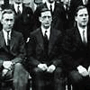

Background
Eamon DeValera was born on the 14th of October 1882. His mother Catherine Coll was a native of the county Limerick. She immigrated to America as a young girl. There she would meet a young Spanish immigrant by the name of Juan Vivion DeValera. The couple developed a relationship and soon enough Catherine gave birth to a new baby named Eamon DeValera.
DeValera's early childhood was at times a miserable one. His father died when he was still at quite a young age. His mother then decided to send young Eamon back to Ireland where his grandmother reared him. DeValera often commented about his fond memories of Limerick. However some historians suggest that deValera led a quite deprived life in county Limerick. Some theories suggest that as a young boy deValera lacked the love and affection that most children receive. He was reared by his grandmother and lived under the harsh disciplined rules of his uncle. It is said in some books based upon his life that deValera used to write to his mother in America pleading with her to bring him back to America. This never happened.
DeValera attended school at Bruree. As a pupil at school, deValera excelled in certain subjects. One of these subjects was Maths. He would eventually go on to teach Maths in various schools around the country including Rockwell College in a Cashel in Co. Tipperary.